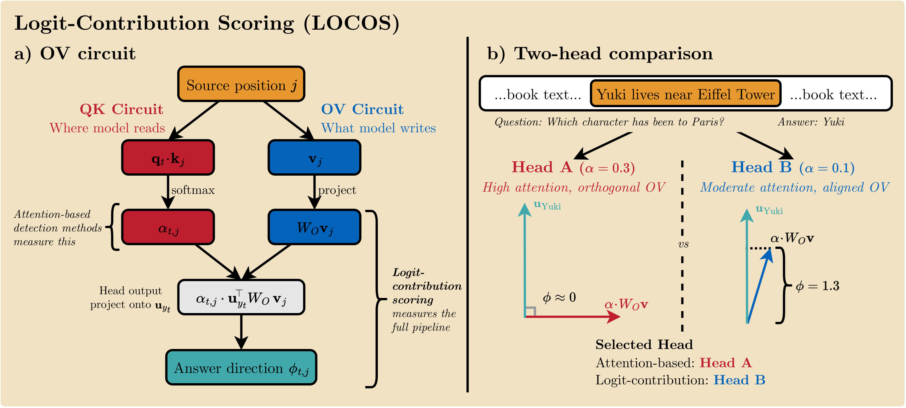
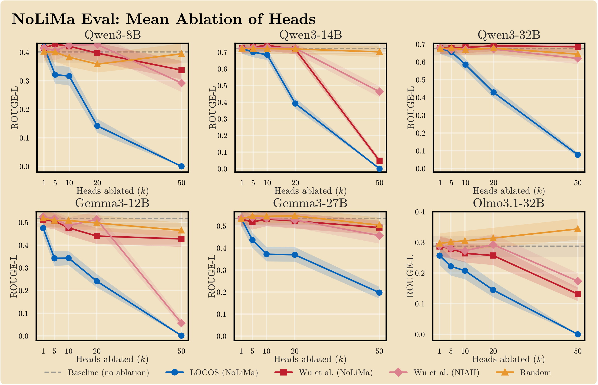
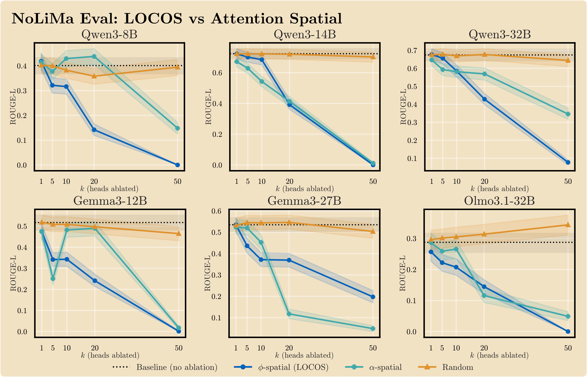
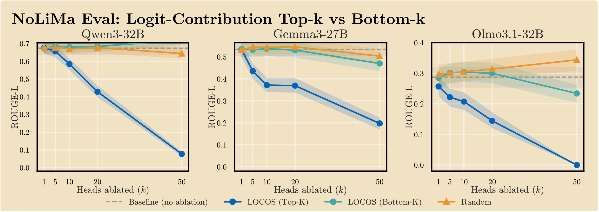
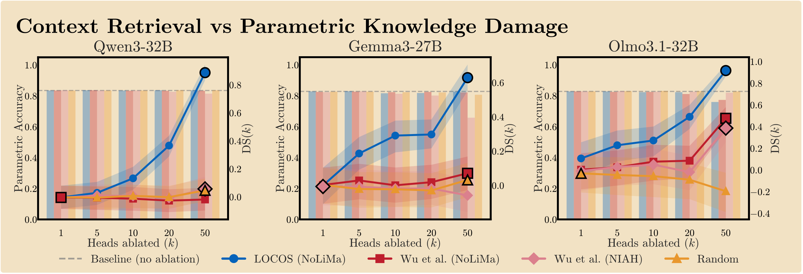
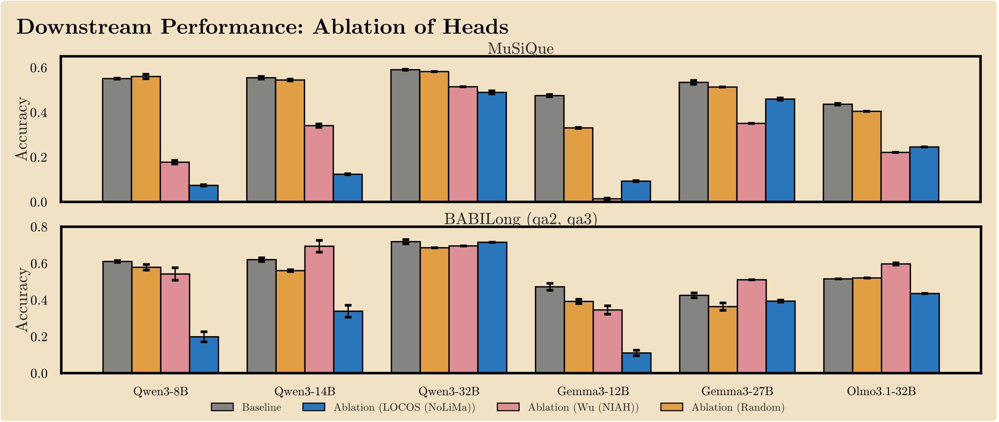

Logit-Contribution Scoring Identifies Non-Literal Retrieval Heads
{aryo.gema,p.minervini}@ed.ac.uk b.alex@hw.ac.uk
LLMs often retrieve answers by synthesizing meaning, not copying tokens — yet existing retrieval-head detectors only reward literal token matches. LOCOS scores each head by what it writes through the OV circuit, not just where it attends.
Existing detectors score attention heads by where they read (QK circuit). LOCOS instead measures what each head writes (OV circuit), projected onto the answer-token unembedding direction.
For each head and decoding step, compute φ = uy⊤ · α · WOv: the read weight scaled by the OV write direction toward the answer token.
Compare φ on needle positions against off-needle positions within a single forward pass, isolating retrieval-specific writing from incidental attention.
Pool spatial contrast over answer steps with a correctness filter. The final head score Sl,h is the mean spatial contrast across probing trials.

Does scoring attention heads by what they write — rather than where they attend — better identify non-literal retrieval heads?
In long-context use, LLMs frequently synthesize answers from the meaning of a relevant context span rather than literally copying tokens. Existing detectors miss these heads: they reward heads whose attended token matches the generated token — a literal-copy criterion that captures where a head reads but not what it writes.
RQ1: Does LOCOS select heads that causally degrade non-literal retrieval more than baselines?
Mean-ablating the top-k LOCOS heads collapses NoLiMa ROUGE-L at lower head counts than every attention-based baseline across all six model configurations (Qwen3 8B/14B/32B, Gemma-3 12B/27B, OLMo-3.1 32B). LOCOS reaches near-zero ROUGE-L by k=50 in five of six models; the strongest attention baseline still retains substantial performance at the same depth.

RQ2: Is the OV projection actually doing work beyond just attention patterns?
A controlled experiment replaces the full LOCOS score with an attention-only spatial contrast — the same needle-vs-off-needle contrast, but using φ = α instead of φ = α · u⊤WOv. Both scorers use identical spatial-contrast aggregation; only the per-position observable differs. LOCOS is stronger on Qwen3-8B, Qwen3-32B, and Gemma-3-12B; comparable on Qwen3-14B and OLMo-3.1-32B; and weaker at large k on Gemma-3-27B, confirming that the OV term provides a meaningful signal beyond pure attention patterns on most architectures.

RQ3: Could LOCOS just be identifying any high-contributing heads — not specifically retrieval heads?
Bottom-k ablation selects heads with the lowest LOCOS spatial-contrast scores while still having large absolute logit contribution. These heads do not degrade retrieval — they track the random baseline. This rules out the circularity objection: LOCOS is not selecting the most globally "important" heads, but specifically those whose spatial contrast distinguishes needle from context positions.

RQ4: Are LOCOS heads retrieval-specific, or do they contribute to general computation?
Under the same ablation that collapses retrieval performance, parametric recall (City-Country, PopQA) and arithmetic reasoning remain at baseline. LOCOS achieves the highest dissociation score — retrieval degradation minus parametric degradation — in every model configuration, confirming that the selected heads are functionally specific to context retrieval.

RQ5: Do LOCOS heads transfer to real long-context tasks beyond the probing benchmark?
Mean-ablating the top-50 LOCOS heads degrades performance on MuSiQue (multi-hop QA) and BABILong (long-context reasoning). LOCOS produces the largest drop in 6 of 12 model–benchmark cells. A random-heads control stays within 0.05 of baseline, confirming the effect is specific to LOCOS-selected heads.

Scope: LOCOS identifies heads whose OV path contributes to contextual retrieval in these probes. It does not claim to cover all retrieval behavior; heads performing diffuse contextual integration may be underrepresented. Reproduction commands and artifact paths are listed in the repository's REPRODUCING.md and experiments/manifest.yaml.
If you use LOCOS in your research, please cite:
@misc{gema2026locos,
title = {Logit-Contribution Scoring Identifies Non-Literal Retrieval Heads},
author = {Gema, Aryo Pradipta and Alex, Beatrice and Minervini, Pasquale},
year = {2026},
note = {Preprint forthcoming}
}